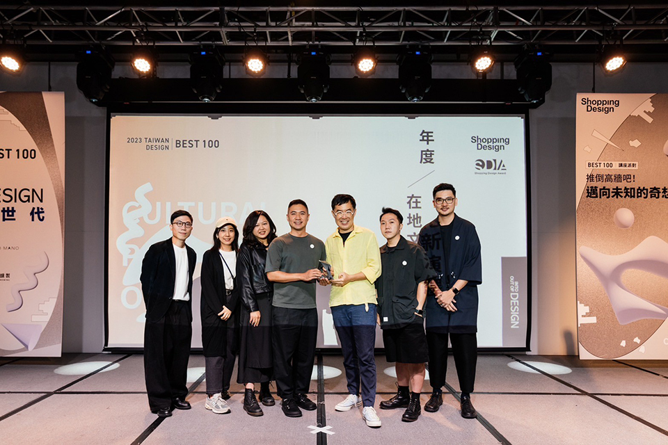
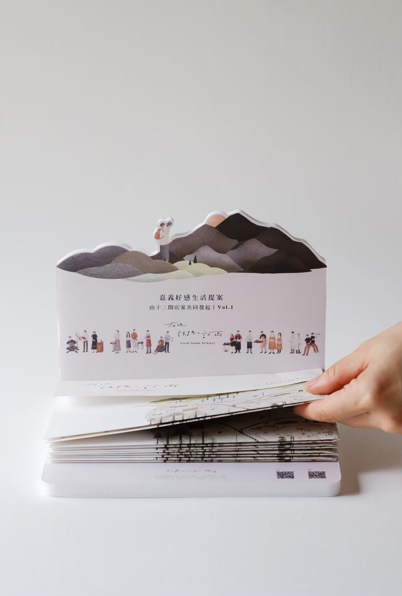

揪踅街 Roaming
在地領路人計畫
－計畫緣起－
這是嘉義好感生活提案的初試啼聲，由嘉義縣市 12 間店家共同發起。用在地人和在地店主的視角，帶大家走進不同角色的嘉義人生活。

「在地領路人計畫」裡，除了描繪各店店主創業和經營的故事，也分享在地店主日常喜歡走訪的私房景點。


「領路人地圖」是一張有咖啡、餐食、烘焙、文具、書店、藥局、民宿、特產、選物，還有嘉義縣市景點小品的地圖，帶來更多元的走讀樣貌。
後續也許會舉辦店主講座、插畫展覽、領路人市集、邀請更多類型的店主加入第二期的領路人地圖⋯請大家持續關注這個計畫，讓我們一起把嘉義放在心上！


在地領路人計畫 Vol.2 -領路人物輯
集結身份各異的家鄉人、品牌店主、新嘉義人。
從生活圈中細微的發現，透過值週接力的闡述，
勾勒出不同種嘉義的樣子。
25組領路人值週計劃
| 發起團隊 ｜ | ｜ | 湯城鵝行、木商咖啡、木更Mugeneration、穀谷 |
|---|---|---|
| 暸解更多 ｜ | ｜ | IG |